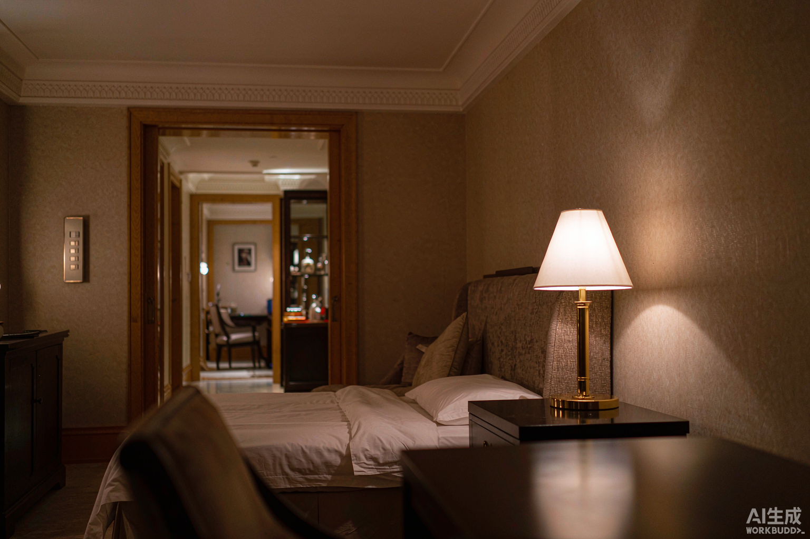

"卧室门口开灯，躺下再摸黑起来到门口关灯"——双控开关是家装里最贴心的设计之一。可一旦想升级智能开关，麻烦就来了：拆开底盒，里面赫然三根以上的线，网上买的智能开关接上去，轻则双控失效，重则直接短路跳闸。
装修群和知乎上"双控怎么改智能"的提问常年不断。这事的坑不在产品，而在思路：传统双控是"物理连线"，智能双控是"逻辑联动"——改法完全不同。今天把三种主流改法一次讲透，看完你就能对着自家底盒选方案。
一、先搞懂：老双控为什么不能直接换
传统双控开关之间有两根"来回线"，靠物理导通实现两地开关同一盏灯。而绝大多数单控版智能开关只认"火线进、灯控线出"两根线——直接怼上去，多出来的双控来回线不是闲置，就是接错短路。
改造的核心原则就一句话：废弃物理双控线，把"物理双控"变成"智能逻辑双控"。底下这根线怎么处理，正好对应三种方案。
二、三种改法对比：没有最好的，只有最合适的
| 方案 | 做法 | 成本 | 稳定性 | 适合谁 |
|---|---|---|---|---|
| A. 单火开关 + 无线开关 | 门口换单火智能开关，床头贴无线开关，APP设联动 | 最低（~150元） | ⭐⭐⭐ | 底盒线少、不想折腾 |
| B. 单火开关 + 借电开关 | 床头开关从旁边灯（如阅读灯）回路"借电"供电，按键转为无线模式 | 中（~250元） | ⭐⭐⭐⭐⭐ | 床头底盒有线可借、怕换电池 |
| C. 双零火开关直替 | 有零线的底盒，两边都换零火智能开关，APP设双控联动 | 较高 | ⭐⭐⭐⭐⭐ | 新房或已补零线 |
方案A的细节：门口开关L孔接火线、L1孔接灯控线，多余的双控来回线用绝缘胶布包好塞回底盒；床头原开关拆掉，线头同样包好，盖空白面板，贴一个Zigbee无线开关。无线开关一颗电池能用数年，唯一缺点是偶尔有零点几秒延迟。
方案B是老玩家最爱：如果床头底盒里恰好有床头灯或阅读灯的另一组火线+灯控线，把第二个智能开关接在这组线上，再在APP里把它的按键"转为无线开关"模式——它就变成了一个永不掉电的无线开关，彻底告别换电池，响应走本地网关，断网都秒回。
方案C最一劳永逸：底盒里有零线的话，两个位置都换零火智能开关，供电稳、带载大、还能做Zigbee网络中继，顺便优化全屋信号。
三、接线四步走 + 三条血泪避坑
步骤：①关总闸，验电笔确认无电 → ②拆旧开关，用便签给每根线标"火/控/双控" → ③按方案接线，废弃线头绝缘处理塞回底盒深处 → ④两个设备入网、改好记的名字（如"卧室主灯""床头副开关"），创建自动化：触发=床头副开关单击，动作=卧室主灯"开/关"（注意选开/关交替，不是单纯"开"）。
避坑三条：
- 必须断电操作。强电不是闹着玩的，拿不准就花200块请电工，别省这个钱。
- 认线靠验电笔，别靠颜色。不同年代师傅布线习惯不同，"蓝色=零线"不一定成立。
- 联动动作选"开/关"。很多新手设成"开"，结果床头按了没反应——因为灯本来就是开的。选交替切换才符合双控直觉。
四、楼梯三控？一样能扩
老房子楼梯常见的三控（楼下+楼上+转角），改造逻辑完全一样：保留一个智能开关做主控，其余全部改为无线开关（或借电开关），APP里把每个按键都指向同一盏灯的"开/关"。想要几个控就加几个，物理布线从此不再是限制。
改完之后还有隐藏福利：出门躺床上喊一声"关灯"，或者离家模式一键全关——这些是物理双控永远给不了的。
写在最后
双控改智能，本质是把"一根线的物理关系"升级成"一张网的逻辑关系"。底盒没零线的老房，方案A省事、方案B稳定；正在装修的新房，请直接让电工在每个开关底盒预留零线，一步到位。改之前先断电、先认线，剩下的交给APP里三分钟的自动化配置。
本文由耐利普（Nexlamp）整理，专注涂鸦Zigbee智能照明与LED驱动电源，欢迎交流老房改造方案。